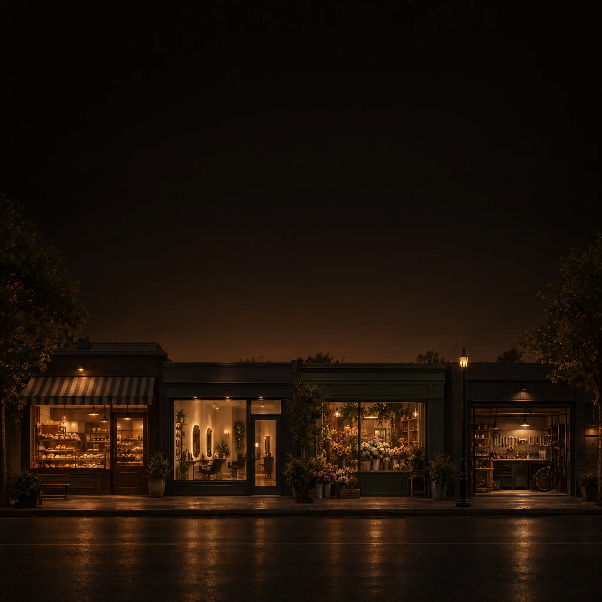
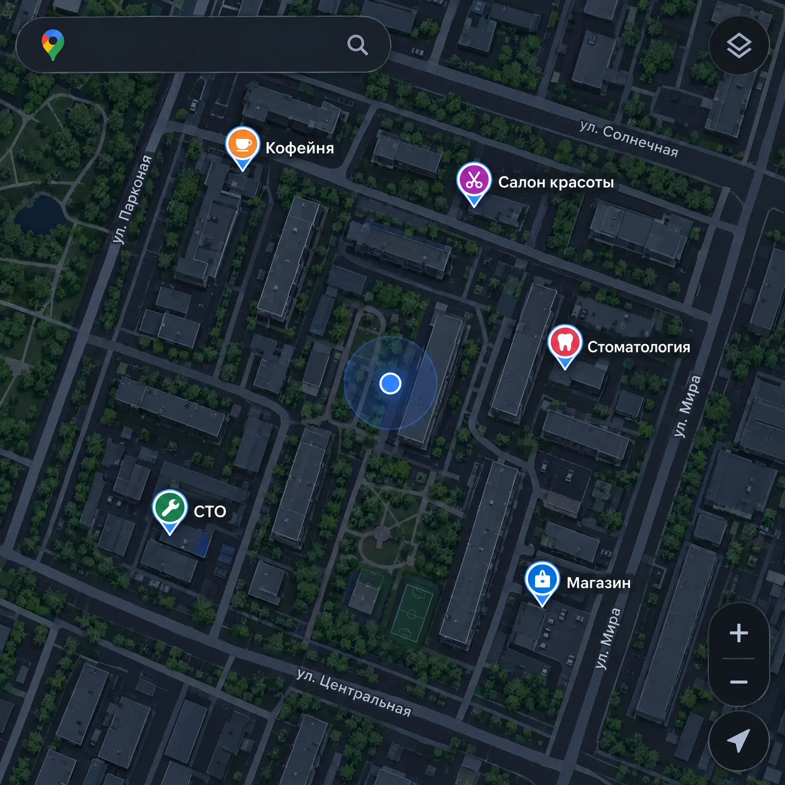
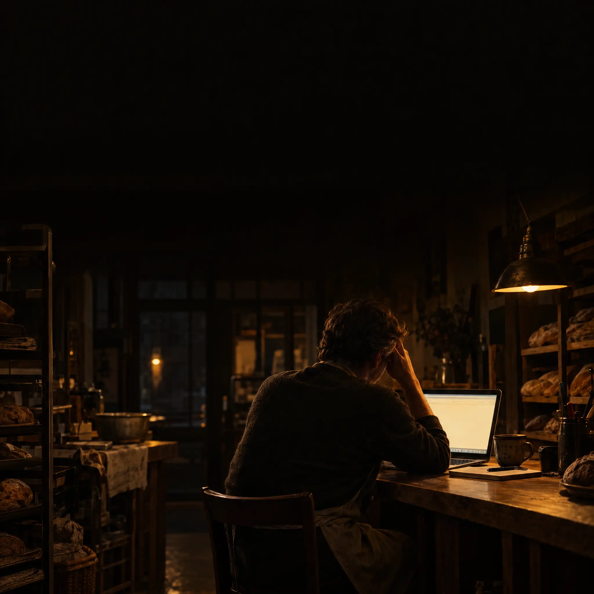
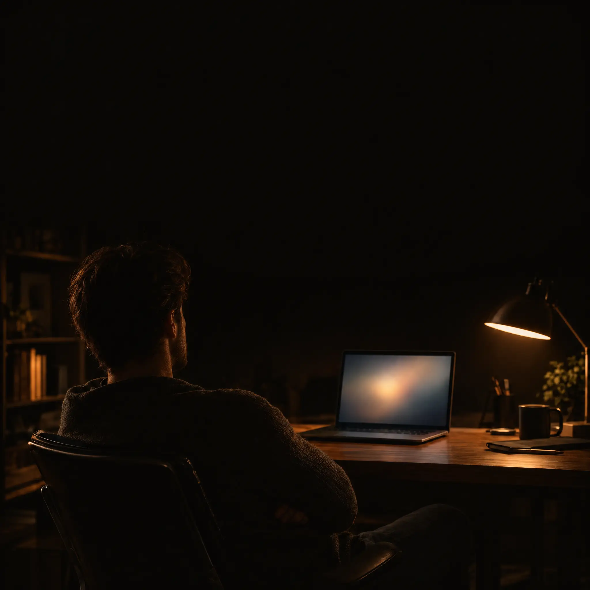
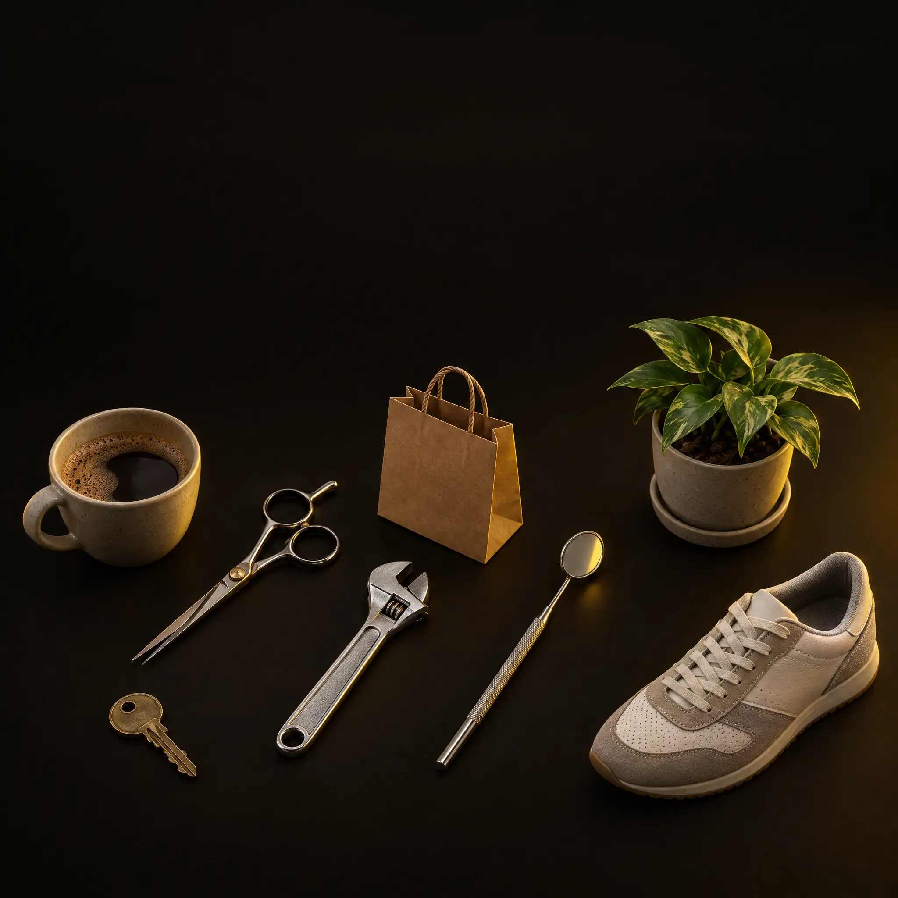
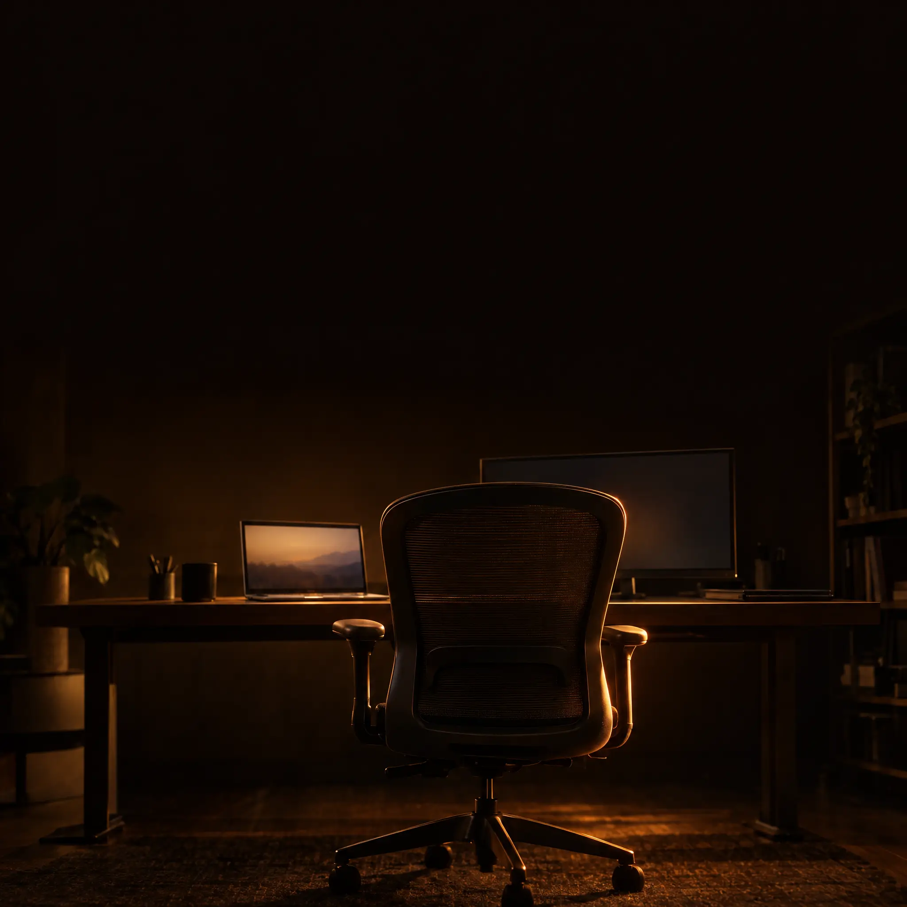
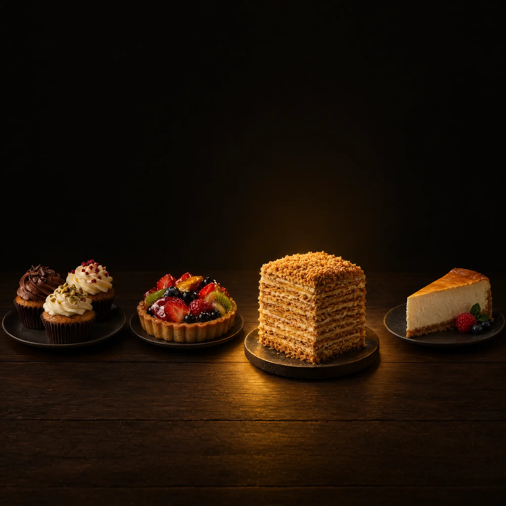

Усі фони згенеровано GPT Image 2.5 через Higgsfield (2048×2048, ~5 кредитів кожен, 30 витрачено). Текст слайдів — повний, із джерела. Нижче — три варіанти для 163.
Посчитано по миллиарду объявлений о работе в 27 странах. Не опрос — живой рынок
Если работодатель уже за это доплачивает — заказчик заплатит тем более

малого бизнеса в мире до сих пор без сайта
В США 27%, на развивающихся рынках до 60%

Прямо сейчас: пять соседних бизнесов вокруг вас — кофейня, салон, стоматология, СТО, магазин. У скольких есть сайт?
Посчитайте и напишите цифру в чат

Каждый четвёртый говорит прямо:
Вот эта фраза — и есть ваш заработок

Убеждение 2Сейчас я просто

любую нишу / бизнес / услугу / товар

Убеждение 3
ПредставьтеФабрика начинается не с печи. С решения: какой именно торт.
Агент — так же. Не «сделай сайт», а «сайт-визитка локальному бизнесу»
Торт
Фабрика начинается не с печи. С решения: какой именно торт.
Агент
Агент — так же. Не «сделай сайт», а «сайт-визитка локальному бизнесу»